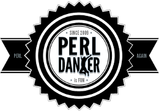
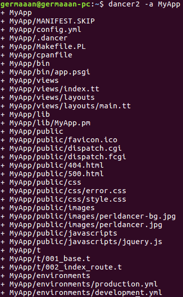
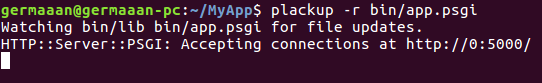
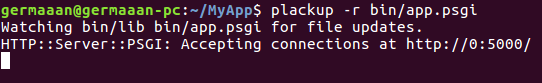

Camello Bailarín:
Introducción a Dancer
Germán Martínez Maldonado
(
GitHub: @germaaan /
Twitter: @germaaan_)
Oficina de Software Libre de la Universidad de Granada
(Twitter: @OSLUGR /
Facebook: @SoftwareLibreUGR)
Granada Geek
(http://www.meetup.com/es-ES/Granada-Geek/)

¿Qué es Dancer?
Es un framework web ligero libre y abierto escrito en Perl.
La versión 2 ha sido completamente reescrita para tener un diseño orientada a objetos completo más robusto y extensible.
¿Qué tiene Dancer?
- Simplicidad y minimalismo.
- Soporte PSGI, plugins y diseño modular: llamadas AJAX, identificador navegador, bases de datos, REST, cookies... https://metacpan.org/pod/Dancer2::Plugins
- Pocas dependencias.
Métodos HTTP: GET, POST, PUT, DELETE
Comportamiento por defecto:
any '/accion' => sub {
# code
}
Comportamiento concreto:
any ['get', 'post'] => '/accion' => sub {
# code
};
Declaración de rutas
Con paso de variables:
get '/hola/:nombre' => sub {
return "Hola " . route_parameters->get('nombre');
};
Con paso de variables opcionales:
get '/hola/:nombre?' => sub {
"Hola, " .
(defined param('name') ? param('name') : "seas quien seas!");
};
Matching de archivos
Nombre normal:
get '/download/*.*' => sub {
my ($file, $ext) = splat;
# código para usar el archivo $file.$ext
};
Expresiones regulares:
get qr{/hola/([\w]+)} => sub {
my ($nombre) = splat;
return "Hola $nombre";
};
Respuestas asíncronas
Se hace mediante flujos (content), pero es necesario primero hacer un flush.
get '/status' => sub {
delayed {
response_header 'X-Foo' => 'Bar';
flush;
# manda contenido al usuario
content 'Hello, world!';
# se puede añadir más contenido al flujo
content 'Hello, again!';
# al terminar se cierra la conexión
done;
} on_error => sub {
my ($error) = @_;
};
};
Hooks
hook before => sub {
var mensaje => 'Hola';
};
get '/foo/*' => sub {
my ($match) = splat;
vars->{mensaje};
};
Plantillas
set 'template' => 'template_toolkit';
hook before_template_render => sub {
my $tokens = shift;
$tokens->{'css_url'} = request->base . 'css/style.css';
$tokens->{'login_url'} = uri_for('/login');
$tokens->{'logout_url'} = uri_for('/logout');
};
Sesiones
set 'session' => 'Simple';
Bases de datos
use DBI;
set 'database' => File::Spec->catfile(File::Spec->tmpdir(), 'dancr.db');
sub connect_db {
my $dbh = DBI->connect("dbi:SQLite:dbname=".setting('database')) or
die $DBI::errstr;
return $dbh;
}
sub init_db {
my $db = connect_db();
my $schema = read_text('./schema.sql');
$db->do($schema) or die $db->errstr;
}
Instalación
perl -MCPAN -e 'install Dancer2'
Si no tenemos CPAN.pm configurado:
wget -O - http://cpanmin.us | sudo perl - Dancer2
Creando un sitio
dancer2 -a MyApp

Arrancando
cd MyWeb-App && plackup -r bin/app.psgi

cd MyWeb-App && plackup -r bin/app.psgi
